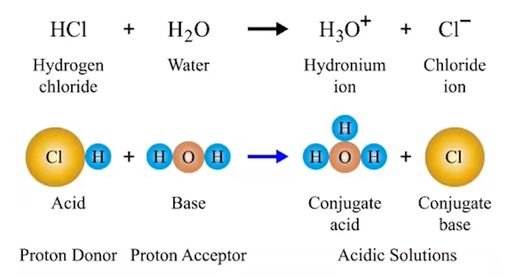
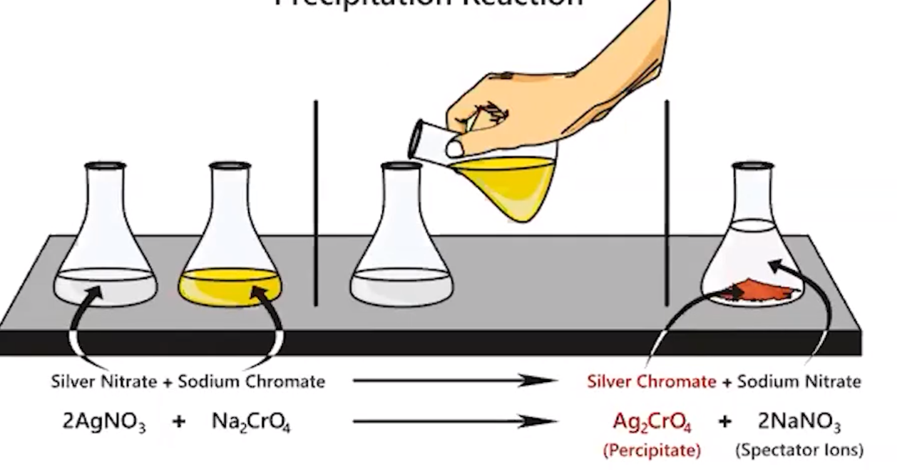

Acid-base reactions
When solutions of an acid and base are mixed a neutralization reaction occurs
Bronsted-Lowry acid-base reaction
{width="7.927083333333333in" height="4.291666666666667in"}
Acid - proton (H+) donor
Base - proton (H+) receiver
Products are usually water and an ionic compound (a salt)
Conjugate acid-base pairs
Every acid has a conjugate base that it turns into
Formed by removing an H+
Ex: HCL => CL^-^
Every base has a conjugate acid that it turns into
Formed by adding an H+
Ex: H2O = > H3O^+^
2 sets of conjugate acid base pairs (acid, conjugate base and base, conjugate acid) can be identified
Precipitation reactions
Mixing ions in aqueous solutions that produce a solid, insoluble compound (the precipitate)
All sodium (Na), potassium (K), ammonium (NH4^+^) and nitrate (NH3^+^) salts are soluble in water
Solubility Rules
Compounds with alkali metal (group 1) cation (Li, Na, K, etc) or ammonium (NH4+) are always soluble
Compounds with NO3- are always soluble
{width="6.09375in" height="3.1979166666666665in"}
Redox reaction
Transfer of one or more electrons between reactions
Reduction: loss of oxygen atoms from a molecules, Oxidation: molecule/ion gains oxygen atoms
Ex. Rusting of iron
4Fe + 3O2 => 2Fe2O3
Iron (Fe) has been oxidized (oxidation # 0 => 3+)
Oxygen (O) has been reduced (oxidation # 0 => 2-)
Electrons are transferred by the species that is oxidized to the species that is reduced
Loses electrons => oxidized
Gains electrons => reduced
Oxidation Numbers
Atoms in elemental form => 0
Monatomic (on their own) ions => oxidation # equals their charge
Oxygen => usually -2
Hydrogen => +1 when bonded to a metal -1 when bonded to a nonmetal
Group 1 elements => +1
Flourine => always -1
All oxidation numbers in a compound will add to the charge of that compound
For compounds with no charge, all oxidations numbers will add to 0
For polyatomic ions, oxidation numbers will add to the charge
Use the known numbers (H, O, F, Gr. 1) and solve for the rest algebraically
Clues to identify
Substance in elemental form => substance joined
Usually redox
Assign oxidation numbers to confirm
Substances differ by an H+
(aq) + (aq) => (s)